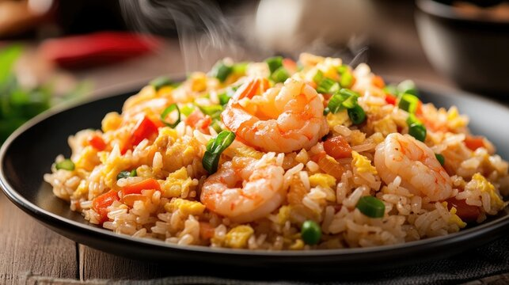

Prawn fried rice is an elegant, seafood-forward dish that brings a vibrant sweetness and luxurious texture to the wok. Juicy, plump prawns are the undisputed stars here, seared quickly at a high temperature until they curl into perfect pink crescents with a beautiful, snappy bite. As they cook, the prawns release a delicate, briny sweetness that infuses the cooking oil, laying down a rich flavor foundation for the rest of the ingredients.
When the rice, crunchy vegetables, and aromatic garlic are tossed into the mix, they absorb that distinct, savory seafood essence. The result is a beautifully balanced dish where the natural sweetness of the seafood cuts through the rich, savory notes of the soy sauce. It offers a much lighter, fresher profile than meat-based fried rices, making it feel like a special occasion meal wrapped in pure comfort.